# Libraries
import pandas as pd
import numpy as np
import matplotlib.pyplot as plt
from sklearn.linear_model import LinearRegression
from datetime import datetime
from sklearn.metrics import mean_absolute_error, root_mean_squared_error
import statsmodels.api as sm
from statsmodels.tsa.stattools import adfuller, kpss
from statsmodels.graphics.tsaplots import plot_acf, plot_pacf
import pmdarima as pm
from statsmodels.tsa.ar_model import AutoReg, ar_select_order
from statsmodels.tsa.statespace.sarimax import SARIMAX
from statsmodels.tsa.arima.model import ARIMA
# Path
path = "~/Downloads/"Lab 5: Supervised Learning - Regression & Time Series
Setup
Libraries & Paths
Python
1. Load & Cleanse Data
Loading in
ms_stock_data = pd.read_csv(path + "Microsoft_Stock-1.csv", parse_dates=["Date"])
ms_stock_data = ms_stock_data.set_index('Date')
ms_stock_data.dtypesOpen float64
High float64
Low float64
Close float64
Volume int64
dtype: objectChecking
# Duplicates
print(ms_stock_data.duplicated().sum())
# Missing Values
missing = [col for col in ms_stock_data.columns if ms_stock_data[col].isnull().sum() > 0]
print(ms_stock_data[missing].isnull().sum())
# Zero Prices
price_cols = ['Open', 'High', 'Low', 'Close']
for col in price_cols:
print((ms_stock_data[col] == 0).sum())0
Series([], dtype: float64)
0
0
0
0Explanation
After checking for duplicates, missing values, and zero prices, I found no erroneous values, so no action was taken. Each of these has potential business risks. With financial data, there is often an important reason why something is missing. For example, imputing data could make future models falsely identify trends.
2. Exploratory Visualization
Price over Time
plt.plot(ms_stock_data.index, ms_stock_data['Close'])
plt.xlabel("Time")
plt.ylabel("Closing Price ($)")
plt.show()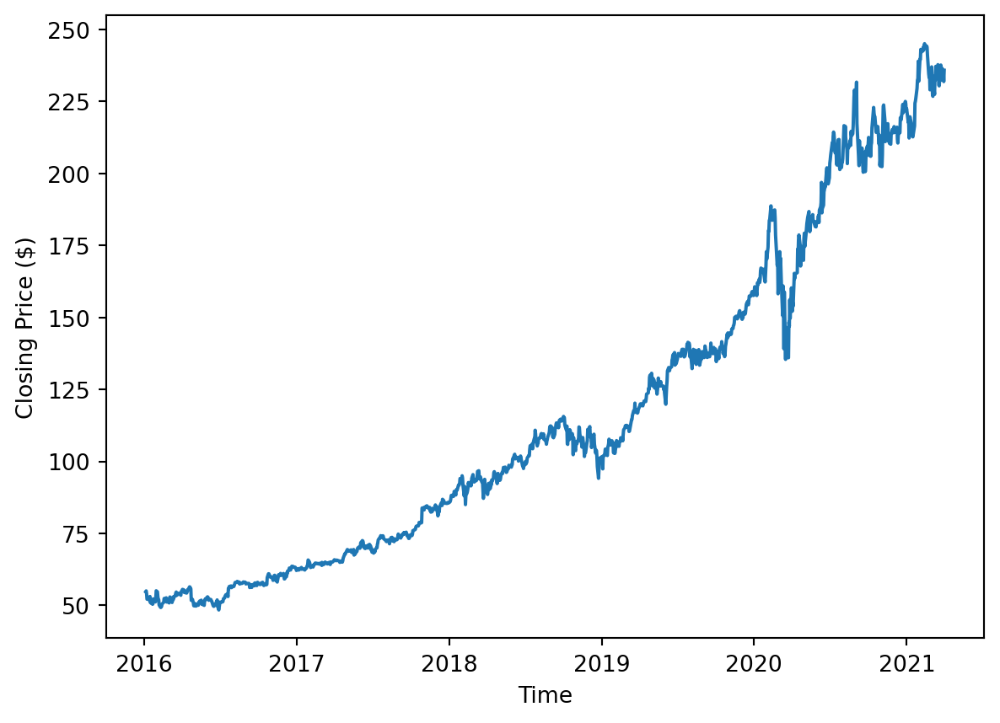
Interpretation
The closing price over the 5-year span has a clear upward trend. Volatility seems to increase over time because the first half is more stable than the second half. There is a clear anomaly caused by the March 2020 pandemic that caused a sharp decrease in price and then a recovery.
Volume over Time
plt.plot(ms_stock_data.index, ms_stock_data['Volume'])
plt.xlabel("Time")
plt.ylabel("Volume")
plt.show()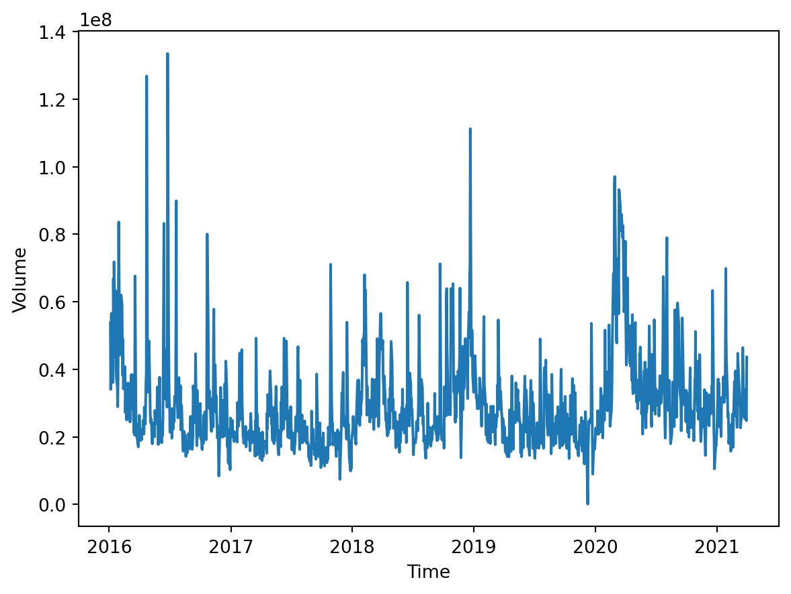
Interpretation
The volume appears to be somewhat consistent. Like the closing price, there is a clear March 2020 spike in volume, showing an increase in trading. On occasion, there are some high-volume days potentially caused by recent news, but overall, the trend is stable.
4. Train/Test Split
date_series = pd.Series(ms_stock_data.index)
X = pd.DataFrame(date_series.apply(lambda x: x.toordinal()))
y = ms_stock_data['Close']
target_date = datetime(2020, 9, 30)
split_index = 0
# Find index
for date in ms_stock_data.index:
if date >= target_date: break
split_index += 1
X_train = X.iloc[:split_index]
X_test = X.iloc[split_index:]
y_train = y.iloc[:split_index]
y_test = y.iloc[split_index:]
print(f"X_train shape: {X_train.shape}")
print(f"X_test shape: {X_test.shape}")
print(f"y_train shape: {y_train.shape}")
print(f"y_test shape: {y_test.shape}")X_train shape: (1194, 1)
X_test shape: (126, 1)
y_train shape: (1194,)
y_test shape: (126,)Justification
This split is done in a certain way because of its temporal nature. I used the date as the index, so that the limits are predictions of a fixed linear system. This split uses a specific date so that everything before that date is used to train, and everything after is unseen. Just like how it will be used, the future is unseen.
4. Linear Regression Model
Expectation
I think the linear model will do well at capturing the trend of growth in the long term. Often, even though stocks are unpredictable, there is a line of best fit that can predict future years. However, I think the fact that the linear model is linear will severely limit the amount of nuance it can predict. I think this model will not be helpful in day-to-day or month-to-month.
lin_reg_model = LinearRegression()
lin_reg_model.fit(X_train, y_train)
LR_preds = lin_reg_model.predict(X_test)
mae = mean_absolute_error(y_test, LR_preds)
print("MAE: ", mae)
rmse = root_mean_squared_error(y_test, LR_preds)
print("RMSE: ", rmse)MAE: 35.41298148475306
RMSE: 36.321492229258254Metric rationale
It is clear that this model underpredicts severely, and that is reflected in the metrics. However, these metrics are not as important when using LR. What is more important is the trend.
plt.plot(y_train.index, y_train, label="Train", color="blue")
plt.plot(y_test.index, y_test, label="Test", color="orange")
plt.plot(y_test.index, LR_preds, label="Predicted", color="red")
plt.xlabel('Time (Date)')
plt.ylabel('Close ($)')
plt.legend()
plt.show()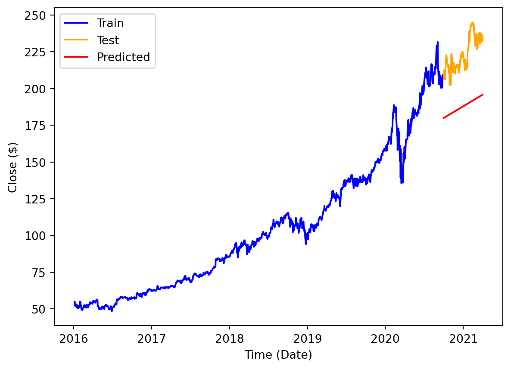
Evaluation
I believe I was most correct in predicting that the model would fail at predicting the daily rhythms of the stock trend. The data is too granular and volatile. However, I was somewhat unsuccessful in predicting that it would excel in long-term forecasting. I didn’t realize how intent the model would be on capturing the line from the whole 5-year span. I believe it didn’t consider recent data enough.
5. Prepare for Time Series Modeling
Decomposition
# Seasonal decomposition
sm_decompose = sm.tsa.seasonal_decompose(ms_stock_data['Close'],
model='multiplicative',
period=252) # approx trading days per year
sm_decompose.plot()
plt.show()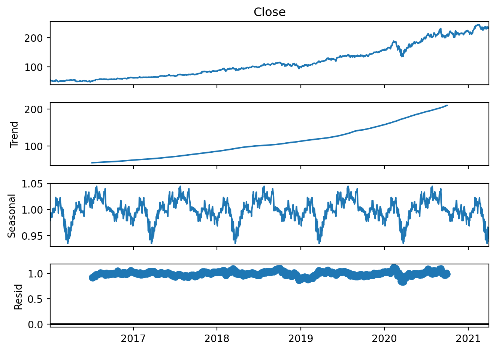
Stationarity
def stationarity_summary(x, label):
x = pd.Series(x).dropna()
adf_p = adfuller(x, regression='c', autolag='AIC')[1]
kpss_p = kpss(x, regression='c', nlags='auto')[1]
print(f"[{label}] ADF p={adf_p:.4f} | KPSS p={kpss_p:.4f}")
return adf_p, kpss_pstationarity_summary(ms_stock_data['Close'], "Raw")
# Non-seasonal Differencing
ms_stock_data['non_seasonal_diff'] = ms_stock_data['Close'].diff(1)
# Plot differenced data
plt.plot(ms_stock_data['non_seasonal_diff'])
plt.title('Differenced Data')
plt.show()
# Verify stationarity
stationarity_summary(ms_stock_data['non_seasonal_diff'], "Non-seasonal")[Raw] ADF p=0.9949 | KPSS p=0.0100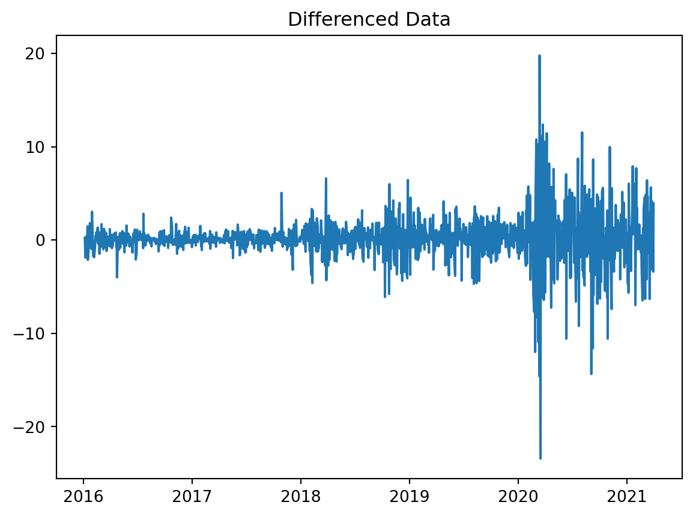
[Non-seasonal] ADF p=0.0000 | KPSS p=0.1000ACF and PACF
# Plot ACF
plot_acf(ms_stock_data["non_seasonal_diff"].dropna(), lags=40)
plt.title("ACF - Diff(1)")
plt.show()
# Plot PACF
plot_pacf(ms_stock_data["non_seasonal_diff"].dropna(), lags=40)
plt.title("PACF - Diff(1)")
plt.show()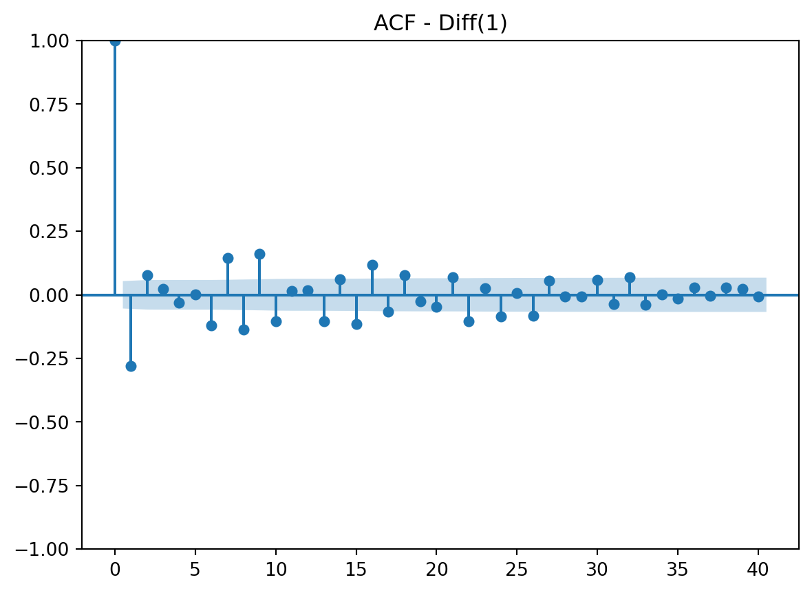
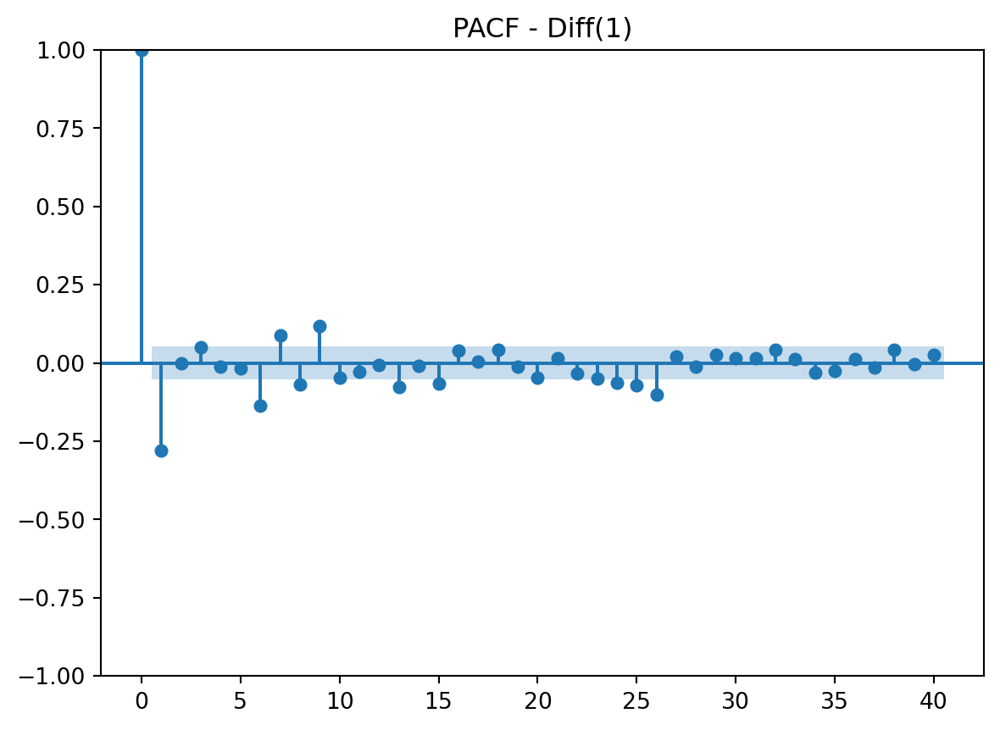
Interpretation
After analyzing the ACF and PACF plots, it is clear that both could be suitable for this data. I believe both show a gradual decay and tail off at the end. Both have a spike at lag 1. ACF has a spike at lag 1 only. PACF has a spike a lag 1 and 2. This is all crucial information for both AR and/or MA components.
6. Time Series Model 1
Model Choice
I chose the AR model for my first predictions because there was an early lag in the PACF plot. It is also a simpler model and uses past data well, which is great for stock data.
Setup
# Train-Test Split
train, test = ms_stock_data.iloc[:split_index], ms_stock_data.iloc[split_index:]
print(f"Train Shape: {train.shape}, Test Shape: {test.shape}")
# P Selection
sel = ar_select_order(train['Close'].dropna(), maxlag=4, old_names=False)
p = max(sel.ar_lags)
print("Chosen order for AR p = ", p) Train Shape: (1194, 6), Test Shape: (126, 6)
Chosen order for AR p = 2Model
AR_model = AutoReg(train['Close'].dropna(), lags=p, trend='c', old_names=False).fit()
params = AR_model.params.to_numpy()
const, phis = params[0], params[1:]
hist = list(train['Close'].iloc[-p:].to_numpy())
preds = []
# rolling 1-step forecast with truth
for t in test.index:
close_pred = const + float(np.dot(phis, hist[::-1]))
preds.append(close_pred)
hist = hist[1:] + [test['Close'].loc[t]] # truth
TS1_preds = pd.Series(preds, index=test.index, name=f"AR({p}) 1-step")Plot
recent_train = train[1080:] # for visual purposes
plt.plot(recent_train['Close'], label="Test")
plt.plot(test['Close'], label="Test")
plt.plot(TS1_preds, "--", label="Forecast")
plt.title(f'AR({p}) 1-step Forecast')
plt.xlabel("Time")
plt.ylabel('Close ($)')
plt.legend()
plt.show()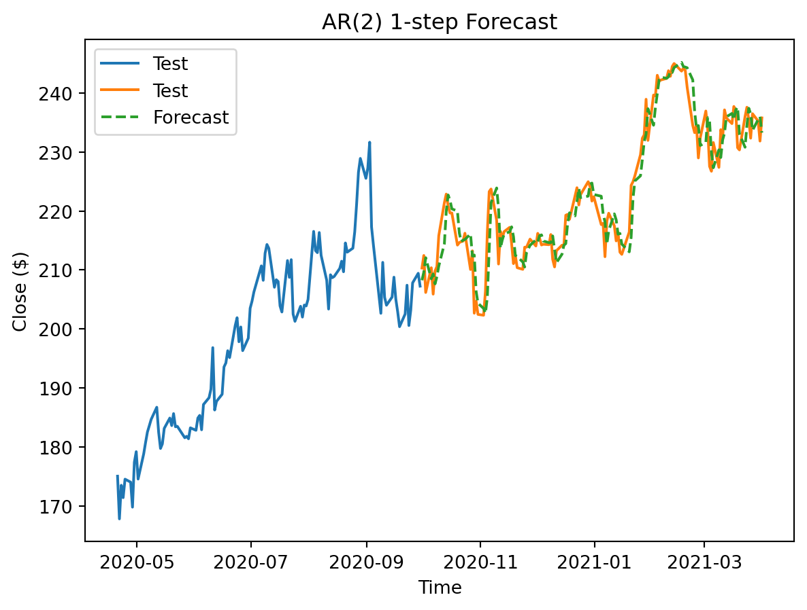
Metrics
mae1 = mean_absolute_error(test['Close'], TS1_preds)
print("MAE:", mae1)
rmse1 = root_mean_squared_error(test['Close'], TS1_preds)
print("RMSE:", rmse1)MAE: 2.7667540554809666
RMSE: 3.6080687433835528Metric rationale
This is a large improvement from the LR metric. Being off by an average of less than 3 dollars is a lot better for investors.
Comparison
There are some very apparent strengths compared to the linear model. For this model, I chose to take advantage of the truth of the test set to run the model for each individual day. The result was much more sensitive to short-term data and was much more accurate each day.
7. Time Series Model 2
Model Choice
The ACF plot led me to believe that moving average could be of use as well. I want to contrast the strengths of AR with MA. I assume that this model will improve on the previous model because it considers errors.
Setup
auto_arima_model = pm.auto_arima(
train['Close'],
start_p = 1,
start_q = 1,
start_d = 0,
max_p = 3,
max_q = 3,
max_d = 2,
m = 12,
start_D = 0,
max_D = 2,
start_P = 0,
start_Q = 0,
max_P = 3,
max_Q = 3,
seasonal = False,
stepwise = True,
test = 'adf',
trace = True,
error_action = 'ignore',
suppress_warnings= True,
scoring = 'mae',
scoring_args = {"transform": "log"} # box-cox, yeo-johnson, sqrt
)
print(auto_arima_model.order)Performing stepwise search to minimize aic
ARIMA(1,1,1)(0,0,0)[0] intercept : AIC=5315.810, Time=0.08 sec
ARIMA(0,1,0)(0,0,0)[0] intercept : AIC=5440.174, Time=0.02 sec
ARIMA(1,1,0)(0,0,0)[0] intercept : AIC=5314.038, Time=0.04 sec ARIMA(0,1,1)(0,0,0)[0] intercept : AIC=5326.230, Time=0.07 sec
ARIMA(0,1,0)(0,0,0)[0] : AIC=5441.662, Time=0.01 sec
ARIMA(2,1,0)(0,0,0)[0] intercept : AIC=5315.703, Time=0.06 sec ARIMA(2,1,1)(0,0,0)[0] intercept : AIC=5284.940, Time=0.28 sec ARIMA(3,1,1)(0,0,0)[0] intercept : AIC=5283.658, Time=0.28 sec
ARIMA(3,1,0)(0,0,0)[0] intercept : AIC=5310.949, Time=0.06 sec ARIMA(3,1,2)(0,0,0)[0] intercept : AIC=5285.378, Time=0.33 sec ARIMA(2,1,2)(0,0,0)[0] intercept : AIC=5312.175, Time=0.22 sec
ARIMA(3,1,1)(0,0,0)[0] : AIC=5288.108, Time=0.19 sec
Best model: ARIMA(3,1,1)(0,0,0)[0] intercept
Total fit time: 1.670 seconds
(3, 1, 1)Model
MA_model = ARIMA(train['Close'], order=auto_arima_model.order, trend="t").fit()
# rolling 1-step forecast with truth
pred = []
res_udp = MA_model
for t, y_true in y_test.items():
pred.append(res_udp.forecast(steps=1).iloc[0])
res_udp = res_udp.append([y_true])
TS2_preds = pd.Series(pred, index=y_test.index)Plot
recent_train = train[1080:] # for visual purposes
plt.plot(recent_train['Close'], label="Test")
plt.plot(test['Close'], label="Test")
plt.plot(TS2_preds, "--", label="Forecast")
plt.title(f'MA 1-step Forecast')
plt.xlabel("Time")
plt.ylabel('Close - $')
plt.legend()
plt.show()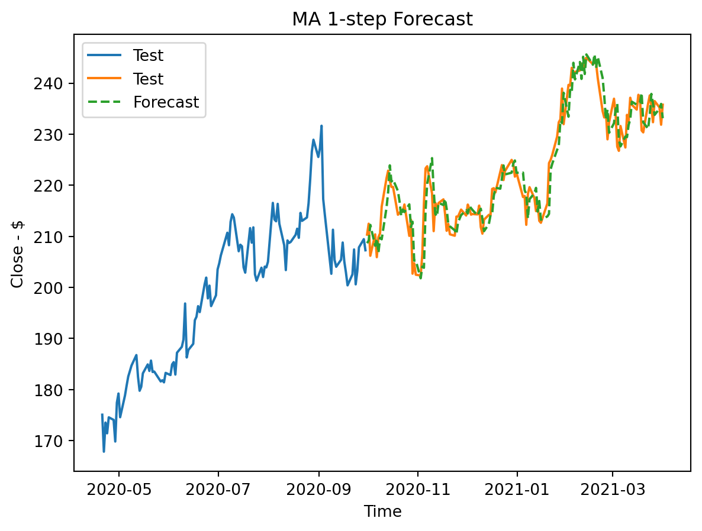
Metrics
mae2 = mean_absolute_error(test['Close'], TS2_preds)
print("MAE:", mae2)
rmse2 = root_mean_squared_error(test['Close'], TS2_preds)
print("RMSE:", rmse2)MAE: 2.8937985470124996
RMSE: 3.7326268141631735Metric rationale
Once again, these metrics show a promising model very comparable to the previous one.
Comparison
Similar to TS1, this model is very different from LR because it uses information of past errors to predict, not just the long-term trend. It also uses a rolling forecast method.
8. Final Comparison
Plot Comparsion
# Final plot
plt.plot(train['Close'], label='Train')
plt.plot(test['Close'], label='Test')
plt.plot(test.index, LR_preds, linestyle="--", label='LR')
plt.plot(TS1_preds.index, TS1_preds, linestyle="--",label='TS1 (AR)')
plt.plot(TS2_preds.index, TS2_preds, linestyle="--",label='TS2 (MA)')
plt.title('Model Comparison')
plt.xlabel('Time - Year')
plt.ylabel('Close - $')
plt.legend()
plt.show()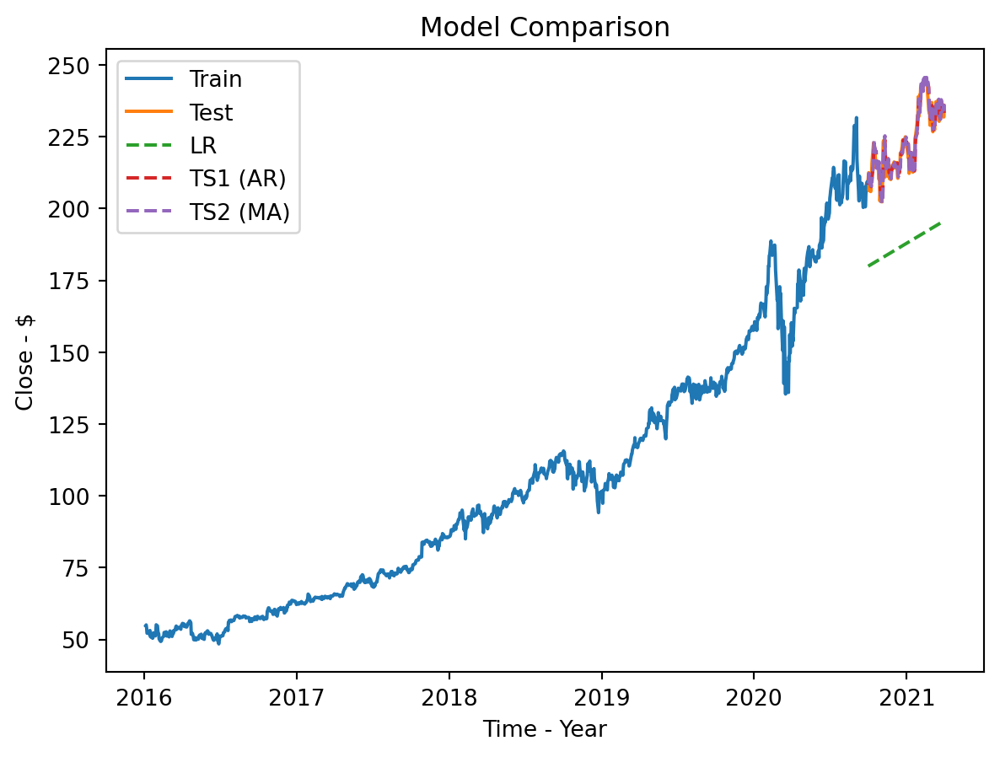
# Final plot zoomed
recent_train = train[1100:] # for visual purposes
plt.plot(recent_train['Close'], label='Train')
plt.plot(test['Close'], label='Test')
plt.plot(test.index, LR_preds, linestyle="--",label='LR')
plt.plot(TS1_preds.index, TS1_preds, linestyle="--",label='TS1 (AR)')
plt.plot(TS2_preds.index, TS2_preds, linestyle="--",label='TS2 (MA)')
plt.title('Model Comparison')
plt.xlabel('Time - Year')
plt.ylabel('Close - $')
plt.legend()
plt.show()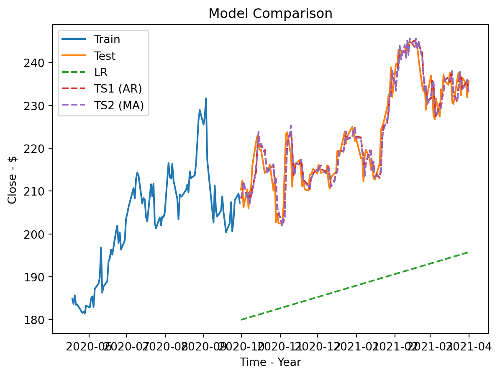
Metric Comparison
| Metric | Linear Regression | Auto Regressive | Mean Average |
|---|---|---|---|
| MAE | 35.41 | 2.77 | 2.89 |
| RMSE | 36.32 | 3.61 | 3.73 |
Recommendation
I believe the winner is the AR model TS1. Not only did it score best in both metrics, but it was also simpler. Explaining to non-technical people that it uses today to predict tomorrow is very valuable.
9. Communicating to Non-Technical Stakeholders
10. Reflection & Next Steps
Pitfalls
- The first pitfall to consider is the reality that the AR model is very short-term focused. When it comes to stocks, people are often interested in the long-term predictions. This model would struggle with that because it is highly dependent on true rolling forecasts, and it is sensitive to recent change. A safeguard against this concern is to combine with other model strategies to account for more history and trend.
- The other potential pitfall is market changes. Data outside the dataset is crucial to predictions. News, reports, and business changes are not being accounted for. A potential safeguard is to retrain more frequently during these events.
Monitoring Performance
I would keep a close eye on the two primary metrics. I would also be more active in maintenance during market changes and shifts. I would decide to recalibrate or refit when either the metrics are noticeably underperforming or the outside news is causing volatility.
Caveats
- The first caveat is that this is a rolling forecast. Its strengths do not support the goal of predicting long-term prices for investment advice. It is crucial to understand the short-term nature of this model.
- Second, it requires maintenance. Since the model is a rolling forecast, it must have its history updated at a very consistent rate. It is also crucial to retrain the model, which adds more time and energy.
- Lastly, it is not aware of anything outside of the 6 basic features. It is not using the latest financial news and information when predicting. It does not know the current global market trend. It is limited, as of right now, to only its daily stock price information.